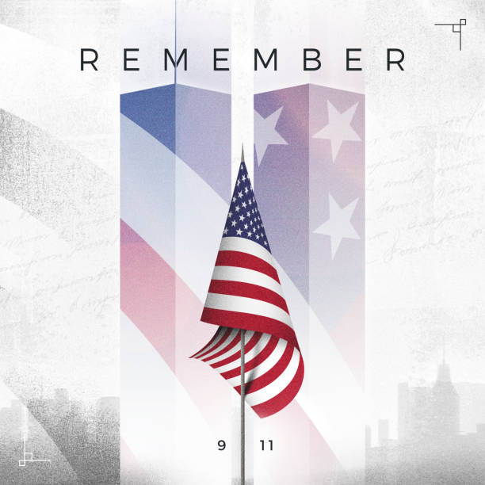

Digital Memorial

Rick Rescorla
A vietnam veteran who saved nearly 2,700 lives on 9/11. He deserves to be Recognized and honored.
Welles Crowther
An ordinary stock trader who rushed up the south tower, making multiple trips saving as many people as possible. The man in the red bandana deserves to be remembered, Recognized and honored.
The Passengers and Crew of United Flight 93
The passengers mentioned in the history page that had regained control of the flight and stopped it from being used as a weapon. They all deserved to be remembered and honored. Recognized.
Moira Smith
The first police officer to report the attack. She was a brave woman who had previously saved dozens from a subway crash in 1991. She deserves to be honored and remembered. Recognized and not forgotten.
Todd Beamer
Another ordinary man aboard flight 93. He never made it home to his wife and kids. He deserves to be remembered and honored. Recognized and live on.
Orio Palmer
Considered to be one of the most knowledgeable men in the FDNY and known for his athletic abilities. He went up to the 78th floor with 50 pounds of gear. He deserves to be honored and remembered. Recognized.
Benjamin Clark
Was a chef in the U.S marines. Later worked in the upper floors of the South Towers. He had assited a woman on a wheelchair during the attacks. He deserves to be honored and remembered. Recognized, never forgotten.
Tom Burnett
Senior Vice President and Chief Operating officer. He received calls from his wife which provided important information to take back the flight. He deserves to be honored and remembered. Never unseen. Recognized.
Will Jimeno
Columbian-American author and retired Port Authority of the NYPD. he was trapped under 30 feet of debris but survived. He isn't dead, but his courage shouldn't go unperceived. He deserves to be honored and recognized.
John McLoughlin
Retired American police officer who also was trapped under the rubble and debris alongside Jimeno. He is still alive to this day and is 73. However his bravery shouldn't go unnoticed. He deserves to be honored and recognized.